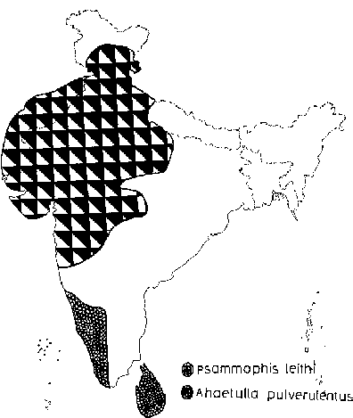

|
Digitized Inventory of Animal Resources: Reptilia ( Snakes ) Principal Investigator: Dr. R. J. B Alfred, Co-Investigator: Dr. Rama Krishna, Contributed by:
Dr. R.C.Sharma |
Psammophis leithi (Gunther 1869)
Taxonomic
Details
----- Scientific Name
----- Classification
----- Synonyms
----- Common Names
Other
Biological Details
----- Habit and
Habitat
----- Distribution
---------- Extent of
Occurrence
---------- Area of occurrence
---------- Altitude
---------- Population
-----
Conservation Status
-----
Diagnostic
Features
-----
Breeding system
Miscellaneous
Information
Literature
sand snakes
Genus . Psammophis Fitzinger 1826
This genus includes sand snakes with slender, cylindrical body, head distinct from neck; eyes are large, with round pupil; nostrils are situated between the nasals; maxillary teeth are from 10-13, one or two in the middle are moderately enlarged, last two teeth are quite enlarged, grooved and recurved (directed backwards); body scales are smooth, obliquely arranged, in 17 rows at the middle of the body; ventral shields are some what rounded; tail is quite long, with divided subcaudal shields; hypapophysis are not present on the posterior vertebrae; hemipenis is short and very slender, without spines or calyces. Four species are available from India.
Scientific Name : Psammophis leithi (Gunther 1869)
Family :
Classification: Genus .
Synonyms:
Common Names:
HABIT & HABITAT This snake prefers to live in grassland, marshes, clay or sandy areas, along the sea coast where plenty of shrubby vegetation is available. This is a diurnal species and is a good swimmer. The food comprises mainly the skinks, Mabuya spp; but other things like small mammals, birds and eggs etc. are absolutely rejected.
Distribution: Gujarat : Surendranagar, Rajkot, Vadodara, Jamnagar and Kachchha district; Nirwand and Pachum Islands; Uttar Pradesh, Maharashtra, Kashmir.
Conservation status: Fairly Common
Length : The body of this long, thin, and cylindrical snake reaches to a maximum length of about 1000 mm;
Body : head is distinct from neck; snout is long; eyes are large with round pupil; tail is quite long.
Scales : Ventral shields are 159-175 in males and 170-185 in females, subcaudals are 92-100, both in males and females; anal shield is not divided.
Colouration : Dorsal colouration is of ground colour or yellowish gray or pale amber or straw coloured; the colour on the lateral aspect is much darker; a pair of black to deep-brown stripes arise on internasal which continue along the whole length of the body; gradually becoming wider on the posterior side and ultimately fuse at the tail; at mid-body the stripes cover most of fifth, sixth and seventh scale rows; in many individuals the dark colour of the lateral aspects form distinct stripe posteriorly on first and second scale rows; dorsal aspect of head is with dark, median, longitudinal stripe; a dark stripe passes through the eyes; labials are of cream colour; reddish-brown spots or dashes are present on throat in most of the individuals; ventrum is uniformly yellowish-white.
Breeding Biology :
